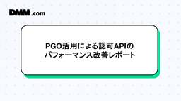

DMM Developers Blog
https://developersblog.dmm.com/
DMM Developers Blog
フィード

PGO活用による認可APIのパフォーマンス改善検証レポート
DMM Developers Blog
はじめに 検証実施の背景 PGOとは？ PGOのメリット PGOのデメリット PGOの使い方 1. PGO なしの初期バイナリをビルドしてリリース 2. (本番環境から)プロファイルを収集 プロファイルとは？ 3. 更新されたバイナリをリリースするタイミングで、最新のソースをプロファイルと共にビルドする 検証 環境 エンドポイント選定 検証項目 検証手順 検証結果 プロファイルの比較 負荷試験の結果(値は3回行なった試験の平均) 考察 課題 まとめ はじめに こんにちは！会津大学２年生のharukunです(自己紹介はこちら)。 合同会社DMM.comのDMM Core 開発コースに１ヶ月間参加…
4日前

MySQLのベンチマーク測定：mysqlslapについての紹介
DMM Developers Blog
はじめに mysqlslapの概要 ベンチマークテスト実行例 実行例1 実行例2 実行にあたっての留意点 おわりに はじめに みなさんこんにちは、LC開発部の神畠です。 普段は、24時間365日で稼働する大規模サービス基盤の課題解決に取り組み、さらなる高品質化と安定運用の実現を目指しています。 今回は業務の中でmysqlslapを利用する機会があったため紹介をしたいと思います。 mysqlslapはMySQLサーバーのクライアント負荷を測定する場合に使われるサービスになります。 本稿ではmysqlslapの概要や実行方法、設定値などについての説明をするとともに、実際に実行するにあたって留意すべ…
16日前
DMM.comはiOSDC Japan 2025に「ゴールドスポンサー」として協賛します！
DMM Developers Blog
ブース/ノベルティ紹介 DMM.com iOS Application Tech Stacks アンケート・クイズ さいごに 今年もiOSDCの季節がやってまいりました！ 2025年9月19日（金）〜 9月21日（日）の3日間にわたり開催されるiOSDC Japan 2025、本イベントはiOS関連技術をメインテーマにしたカンファレンスとなります。 iOSDC Japan 2025 DMM.com（以下「DMM」）は、昨年に続き「ゴールドスポンサー」として協賛しています。 本記事では、DMMのブース紹介をさせていただきます。盛りだくさんのコンテンツを紹介しますので、ご興味を持っていただけたらぜ…
17日前
スクラムフェス金沢2025 登壇レポート
DMM Developers Blog
はじめに 登壇レポート(1): 共創はどこまで拡張できるか ─「民泊×地域共創」の現場に見る、スクラムとパターン・ランゲージの可能性 スクラムとパターン・ランゲージの実践知：現場から生まれた共創の仕組み 発表してみての感想 登壇レポート(2): チーム開発における責任と感謝の話 発表内容の要約 登壇の背景 登壇してみて 今後 登壇レポート(3): 2年連続登壇で深まった金沢コミュニティとのつながり 発表：「GROWモデルで悩みを構造的に理解しよう！ ー スムーズな会話で、よりよい関係性へ ー」 感想：発表してみて 最後に はじめに こんにちは。DMM.com VPoE室 推進チームの内藤聡（@…
1ヶ月前
LiteLLM を App Runner + CloudFront + WAF でシンプルに構築・運用してみた話
DMM Developers Blog
はじめに 背景 プラットフォーム開発本部のAX戦略 ユーザーレビューグループでのAI活用と課題 解決アプローチ 構成 アプリケーション実行基盤の選定理由 インフラ構成イメージ 各コンポーネントの詳細 運用 APIキーの発行・管理 コスト・リクエストの確認 リクエストログの確認 Clineでの設定 成果 これまでの成果 LiteLLMを通じたコスト可視化・解析に成功 APIキーによる制御の仕組みを確認 短期間でシンプルかつセキュアなPoC環境を構築 浮上した課題 全AI活用施策にLiteLLMを導入することは困難 LiteLLMのエンドポイントを指定する利用方法を選ぶ必要がある おわりに 参考資…
1ヶ月前
QA部の生成AI活用実態調査～2025年夏期～
DMM Developers Blog
想定読者 はじめに 調査概要 調査の背景と目的 調査方法と回答状況 対象業務プロセス AXレベル定義 調査結果：現状分析 利用ツールの分布状況 業務プロセス別活用状況 全体傾向：助手レベル中心の活用 活用が進んでいる業務プロセス 活用が限定的な業務プロセス チーム別の特徴的な傾向 QAグループ第1チーム QAグループ第2チーム QAグループ第3チーム デバッググループ 活用による効果と成果 実感されている具体的効果 業務の質的変化 課題と改善への取り組み 明らかになった主要課題 段階的な改善アクション 今後への展望と要望 メンバーからの具体的要望 私たちの次のステップ おわりに 想定読者 本記…
1ヶ月前
IOS XRのeBGPマルチパス利用時にnext-hop-selfが自動動作する件
DMM Developers Blog
はじめに 概要 事象確認タイミング DMMバックボーン構成の前提 リプレイスとアーキテクチャの見直し next-hop-self挙動の顕在化 再現 構成 拠点広報経路確認 拠点A 拠点境界ルータ1 拠点境界ルータ2 拠点B 拠点境界ルータ3 拠点境界ルータ4 コアルータで経路確認 拠点A 拠点B ボーダールータで経路確認 拠点A 対策 設定 確認 拠点A 補足 ポイント DMMネットワークグループでは、インフラエンジニアを募集中！ ネットワークエンジニア（アーキテクチャ） NRE (Network Reliability Engineering) はじめに こんにちは、ITインフラ本部インフラ…
1ヶ月前
JANOG56 MeetingにNOCメンバーとして参加しました
DMM Developers Blog
はじめに JANOGおよびJANOG Meetingについて NOCの構成 NOCの活動 NOC各チームでの活動 L2L3チーム アレンジャーチーム NOCに参加して 山口 伊藤 はじめに ITインフラ本部インフラ部の伊藤と山口です。 2025年7月30日から8月1日に島根県松江市で開催されたJANOG56 Meeting (以下、JANOG56)に、 JANOG56の会場ネットワークを構築・運用するNOCのメンバーとして参加してきました。 2025年3月から8月までの約半年間、NOCチームがどのような活動をしてきたのか紹介します。 JANOGおよびJANOG Meetingについて JANO…
1ヶ月前
ネットワーク運用自動化におけるSLMの活用検証
DMM Developers Blog
1. はじめに 2. SLMってなんですか？ SLMとLLMの比較 SLMとLLMの使い分け LLMの利点と用途 🌐 SLMの利点と用途 🎯 3. どうやって使う？ 検証アーキテクチャ 4. 検証環境と構成 検証環境 検証データ 目標JSON形式 5. 検証結果 5.1 SLM（10b以下）の厳しい現実 5.1.1 検証条件と成功基準 5.1.2 小型SLMの検証結果 5.2 日本語vs英語プロンプトの決定的な差 llama3.2:latestの言語別結果 典型的な失敗パターン 5.3 「SLM」と呼べるのか？大型モデルの検証 大型モデルの結果 5.4 SLMの根本的な課題 5.5 ちなみに：…
1ヶ月前
PHPカンファレンス2025参加レポート
DMM Developers Blog
1. はじめに 2. PHPについて 3. PHP 8.5について PHPリリースサイクルとバージョンアップの重要性 4. 印象に残ったトークの紹介 4.1. エラーハンドリングはtry-catchだけじゃない! Result型で"失敗"を型にするPHPコードの書き方 4.2. Webの外へ飛び出せ。NativePHPが切り拓くPHPの未来 5. 参加を終えての感想と今後の展望 6. おわりに 7. 採用情報 1. はじめに こんにちは、二次元コンテンツ事業/同人開発部の小杉です。 2025年6月28日(土)に開催された「PHPカンファレンス2025」に参加しましたので、その参加レポートをお届…
1ヶ月前
【EKS × IRSA × OIDC】シーケンス図で理解する仕組み解説
DMM Developers Blog
1. はじめに 2. 全体像（シーケンス図） 3. 各ステップの解説 3-1. Pod マニフェスト (YAML) → ServiceAccount 3-2. Pod マニフェスト (YAML) → Kubernetes API Server 3-3. Kubernetes API Server → IRSA Mutating Webhook 3-4. IRSA Mutating Webhook → Kubernetes API Server 3-5. Kubernetes API Server → Pod 3-6. Pod → AWS STS 3-7. AWS STS → IAM ロール 3…
1ヶ月前
SIGIR 2025に参加しました! DMMデータサイエンスグループ
DMM Developers Blog
はじめに SIGIR 2025の概要 各自が印象に残ったセッション・発表 基調講演（Keynotes） day1| BM25 and All That - A Look Back（Stephen Robertson） day2| Digital Health（Ophir Frieder） day3| Please meet AI, our dear new colleague. In other words: can scientists and machines truly cooperate?（Iryna Gurevych） セッション・発表 1. Hypencoder: Hypernet…
1ヶ月前
AI × SSoT で情報活用に革新が起きるか！？ 〜mcp-pagoda を OSS 公開〜
DMM Developers Blog
はじめに SSoT とその課題 活用できなきゃ意味がない Pagoda での SSoT Pagoda の課題 AI に一縷の光明を見出す MCP とは？ mcp-pagoda を使ってみる さいごに はじめに IT インフラ本部の大山裕泰です。 このたび Pagoda と AI (LLM) とを連携する mcp-pagoda を OSS としてリリース しました。 Pagoda は DMM.com のインフラ部が、当時の情報管理の課題を解決（さまざまな主体で多重・分散管理されていた情報を整理・統合）するために開発された情報管理サービスです。 運用用途に応じて任意のデータ構造を定義でき、また他の…
2ヶ月前
DMM QA部の「AX宣言」：「AI for QA」と「QA for AI」の新たな品質保証のかたち
DMM Developers Blog
想定読者 記事の目的 はじめに QA部が直面する課題 AIプロダクト開発の本格化 テスト実行リソースの肥大化 部内スキル格差とフォロー工数の課題 AX戦略への取り組み 「AI for QA」：AIが品質保証を進化させる テスト自動化の進化 今後の具体的なアクション 異常検知と継続的監視 今後の具体的なアクション 品質予測と予防的品質保証の確立 今後の具体的なアクション 「QA for AI」：AIプロダクトの品質基準を確立する 従来の品質要件を超えた包括的な品質評価 今後の具体的なアクション データ・モデル品質の徹底的な検証 今後の具体的なアクション 継続的な監視と信頼性の保証 今後の具体的な…
2ヶ月前
AI × Turtle で実現する Vibe Coding：DMM デザインシステムを活用した新たな開発ワークフロー
DMM Developers Blog
はじめに Turtle とは わたしたちのこれまでの取り組み AI-Turtle プロジェクトの誕生 Figma MCP サーバーを試す Turtle MCP サーバーを作る MCP サーバーの実装 ルールの作成 デザイントークンの処理 デザインデータは AI-friendly であるべき AI に考えさせることを極力減らす Turtle の認知度向上 さいごに 一緒に働ける仲間を募集しています はじめに こんにちは。DMM.com の プラットフォーム開発本部 > Developer Productivity Group > Turtle チームです。わたしたちのチームは横断チームとして社内…
2ヶ月前
DMMの検索基盤をSolrからElasticsearchにリプレイスしました
DMM Developers Blog
はじめに Solr運用における課題 Solrを用いた検索システム構成 Solr構成における課題 EKSクラスタの定期的なアップデート Solrのウォームアップによる起動時間の長さ 検索改善施策への対応 Elastic Cloudに決定した理由 移行方法 既存機能の提供 各ユースケースの具体的なElasticsearchの例 AND検索の例 Index Settingsの例 ファセットの例 重み付けの例(titleにcommentの3倍のスコアリング) 複数Indexの横断検索例 Solr同等の性能 移行してみて 良かったこと Solrからの脱却 検索システムへの理解度 Elastic社のサポー…
2ヶ月前
その通信、信頼できる？DMMの不正対策が挑んだ“Zero Trust” API制御の設計思想
DMM Developers Blog
General 背景 Zero Trust と BeyondCorp コンテキスト・ベースの必要性 不正対策領域への応用 BeyondCorp 処理フローと 4種の主要コンポーネント 最後の部品 Gateway 全体フロー Component 分割の価値 Blacklight の API 制御における モデルと抽象化 段階的な実現 技術要素 技術的な課題 アルゴリズム的な課題 Blacklightの効果と今後の展望 General プラットフォーム開発本部 第三開発部の恩田です。もともと基盤開発チームで Gatewayやプロキシを設計・構築・運用してきましたが、最近は同じく第三開発部の不正対策…
2ヶ月前
DMM.go#10開催レポート
DMM Developers Blog
はじめに 当日の様子 登壇内容 いっぬ: 「encoding/json v2 を予習しよう！」 主な内容 屋比久怜央: 「log, log/slog パッケージの深掘り」 主な内容 菊地ひなた: 「意外と知らない cgo の世界」 主な内容 松本響輝: 「sync/v2 プロポーザルの背景と sync.Pool について」 主な内容 懇親会 まとめ 次回予告 終わりに はじめに こんにちは！ DMM.go 運営の國分竜二(@_ryuji_cre8ive)です。 普段は、オンラインサロン開発部のアーキテクトチームとして既存機能の改修や新しいアーキテクチャへのリプレースなどを行っています。 202…
2ヶ月前
KubeCon + CloudNativeCon Japan 2025に参加しました！
DMM Developers Blog
はじめに KubeCon + CloudNativeCon Japan 2025 とは レポート Kubernetes SIG Node Intro and Deep Dive そもそも SIG Node とは何か In-Place PodResize (インプレース Pod リサイズ): Sidecar Containers (サイドカーコンテナ): DRA (Dynamic Resource Allocation - 動的リソース割り当て): 悩み 1：高価な GPU、もっと有効活用したいのに… DRA ならこう解決！ 悩み 2：特殊なハードウェアの管理が複雑で大変… DRA ならこう解決…
3ヶ月前
AI研究と難聴から教えられた人間らしさ ーHAZ（Human-AI Agreement Zone）ー
DMM Developers Blog
はじめに 研究発信 研究概要 研究課題：AIにどこまで任せることができるか HAZ（Human-AI Agreement Zone）という考え方 論文とスライド資料 エンジニアが研究し、発信する時代 研究発表 難聴からの学び 突然の難聴との遭遇 難聴からの気づき おわりに はじめに プラットフォーム開発本部 ユーザーレビューグループ（URG）の松井です。 生成AIと共に働く現場エンジニアとしてのDICOMO2025シンポジウムの研究発表に加え、今回は「難聴」という予期せぬ体験を経て、あらためて感じた「人間らしさ」についてお伝えします。 研究発信 生成AIの登場により、私たちエンジニアの働き方は…
3ヶ月前
1か月でローンチ！PF-AX流“AI自動分類”開発舞台裏
DMM Developers Blog
みなさんこんにちは、プラットフォーム開発本部第1開発部CSプラットフォームグループ（以降：PF開発本部、CSP）の渡部 @tenki_develop です。 PF開発本部はDMM内の会員基盤やレビュー基盤など、多くの事業部にて使用する共通基盤を提供することがミッションです。 私たちのPF開発本部では、AIの活用を部内全体で推進するAX 戦略（AI Transformation） が副本部長兼第1開発部部長・石垣さんから発表されました。目標は 「人でやっていた業務の50%をAIに置き換えた（協働）うえで、開発リードタイムへの変化を観測する」 ことで、そこから複数のプロジェクトが派生しています。 …
3ヶ月前
DMM全体のオブザーバビリティってどのレベル？成熟度評価で分かったこと
DMM Developers Blog
はじめに 第1章：なぜオブザーバビリティ成熟度評価を始めたのか オブザーバビリティとは 私たちDMM全体が抱えていた課題 SRE部が主導した理由 成熟度評価を採用した理由 第2章：オブザーバビリティ成熟度モデルの構築 モデル設計の方針 評価項目の構成 オブザーバビリティ成熟度モデル 第3章：どのように現状を把握したのか アンケートの概要 アンケートフォームの構成 レポート作成のプロセス 実施の効果 第4章：データから見えた組織の傾向と課題 全体的な成熟度分布の傾向 データから分かるDMMの現実 組織の強み：データ収集と可視化 改善の余地：アラート最適化と障害対応 全体的な傾向 第5章：評価結果…
3ヶ月前
DMM TVにおけるマイクロバッチを用いたニアリアルタイムレコメンドシステムの導入事例
DMM Developers Blog
はじめに 背景 提案手法 構成とアーキテクチャ選定 マイクロバッチの選定理由 1. 秒単位のリアルタイム性が不要だった 2. 実装・運用保守・コストのバランスを重視した 実験 結果 履歴i2i棚経由の指標 サービス全体の指標 考察 改善点 履歴i2i棚に関すること マイクロバッチ基盤に関すること BigQueryのコスト最適化 ワークフローエンジンの統一 おわりに はじめに こんにちは、データ活用推進部 レコメンドチームの寺井とデータ基盤開発部 ML基盤チームの上田です。レコメンドチームでは、機械学習モデル（特にレコメンド）の設計・実装・評価の役割を担い、ML基盤チームでは機械学習モデルを安定…
3ヶ月前
持続可能なシステムを目指してプロダクトをリアーキテクトしました〜 実践編 〜
DMM Developers Blog
はじめに アーキテクチャ設計の具体変化とコード構成の詳細 アーキテクチャ設計の変化 課題1: 各層の相互依存関係により、仕様変更の修正影響範囲が多い 課題2: service 層に複数の責務が集中し、メンテナンス性が低下していた 課題3: service層のdaoへの依存が大きかった コード構成の詳細 「イベントストーミング」から「実装」への変換プロセス 1.ドメインモデル から実装への変換プロセス 2.イベントから実装への変換プロセス 3. コマンド から実装への変換プロセス 4. 実装とイベントストーミングとの違いの見直しと仕様変更による修正 テストしやすい制約のポイント テスト戦略の変化…
4ヶ月前
JSAI2025（第39回人工知能学会全国大会）に参加しました！
DMM Developers Blog
はじめに JSAI2025の概要 参加レポート ブース展示 インダストリアルセッション 懇親会 聴講セッション おわりに はじめに 皆さん、こんにちは！データサイエンスグループの平野と菊谷です。 私たちは2024年にDMM.comに新卒入社し、現在はデータサイエンスグループで検索・レコメンド機能に機械学習技術を掛け合わせ、性能改善や新規プロダクト開発に取り組んでいます。 本記事は弊社DMM.comが今年度よりプラチナスポンサーを務めた『JSAI2025（第39回 人工知能学会全国大会）』の参加レポートをお届けします。 またブース展示にて私たちが掲示したポスター画像についても、この場であらためて…
4ヶ月前
AX改善活動 チケット自動生成&Chrome拡張のPoC事例
DMM Developers Blog
はじめに 改善活動の目的と方針 事例1：チケット作成プロセスのAX改善 背景と課題 実装内容 システム構成 改善効果の測定 フィードバック 高度な使い方 事例2：Chrome拡張型AIアシスタント 背景と課題 実装内容 システム構成 通常ブラウジングから質問 テキスト選択からの質問 幅広い活用シーン フィードバック 新しい業務スタイル 導入の難しさ まとめ はじめに プラットフォーム開発本部 ユーザーレビューグループ（URG）の松井です。 本記事では、私たちのチームが取り組んだAX改善活動についてご紹介します。始まったばかりの取り組みですが、まずは一歩を踏み出した成果をまとめました。 改善活動…
4ヶ月前
TSKaigi2025に参加してきました！
DMM Developers Blog
はじめに AI Coding Agent Enablement in TypeScript 発表スライド 感想 TypeScript ネイティブ移植観察レポート 発表スライド 感想 機能的凝集を用いたコンポーネント分割 発表スライド サンプルコード generated by Claude4 感想 全体を通しての感想 発表以外のいろいろ 株式会社ダイニー様 株式会社サイバーエージェント様 おまけ おわりに はじめに オンラインサロン開発部の國分です。 今回、TSKaigi 2025 に参加しました。 現地で使用したネームプレート TSKaigi は、TypeScript コミュニティが主催する世…
4ヶ月前
iOSアプリエンジニアの祭典！ try! Swift Tokyo 2025参加レポート
DMM Developers Blog
はじめに try! Swift Tokyoについて DMMのブース運営について Day1 ~ 3. DMM iOSアプリ技術マップ Day2. 使ったことある！ DMMモバイルアプリは？ アンケート Day3. WWDC2025 大予想投票 そのほかの施策 さいごに 運営メンバ 感想 はじめに 本記事をご覧いただきありがとうございます。iOS版 DMMブックスアプリチーム所属 柴田です。私は最近AndroidエンジニアからiOSエンジニアへ転向し、これを機に前から興味のあったtry! Swift Tokyo2025に参加してまいりました。 iOSエンジニアとして参加するイベントは初めてで、少し…
4ヶ月前
AIエージェント「Cursor」で変わる開発マネジメントの実践論
DMM Developers Blog
1. はじめに 2. AIコーディングのその先へ。開発プロセス全体にAIを導入する 2.1 プロセスを"AI"に置き換えるのではなく、"AI"前提のプロセスに作り変える 2.2 開発フェーズ以外の課題がたくさんある 3. マネジメントの知見蓄積とワークフロー化 3.1 ワークフロー化を避けるべきケース 4. エンジニアが開発に集中してもらうためにできること 4.1 類推見積もりによる超概算見積もり 4.2 コードベースからの仕様自動抽出 4.3 投資工数を分析し、開発業務に集中できているか確認 5. まとめ：AIを活用した開発組織マネジメント 1. はじめに こんにちは。DMM.comでプラッ…
4ヶ月前
CodeRabbitと過ごした1ヶ月 ─ AIコードレビュー導入で実感したチーム開発の進化
DMM Developers Blog
はじめに サービスの紹介 Android版 iOS版 Web版 サービスコンセプト AIコードレビュー導入前の状況 コードレビュー体制 導入前の課題 AIコードレビュー導入の検討 CodeRabbitの導入 CodeRabbitとは 導入の容易さ 導入1ヶ月の効果 主なメリット レビュー内容の変化 定量的な効果 チームメンバーからの声 Android開発ならではの指摘 今後の展望 課題解決の進捗 残された課題 今後の方針 プラットフォーム開発本部のAI戦略 まとめ 2025年4月30日に開催された「Sansan×DMM.com Android Tech Talk」での登壇内容を基にしています。…
4ヶ月前